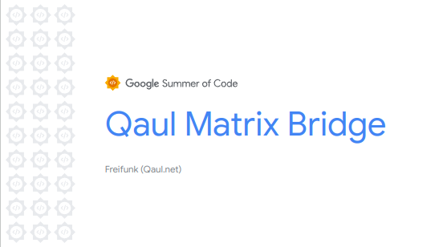
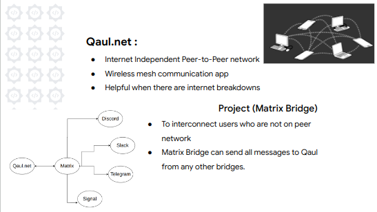
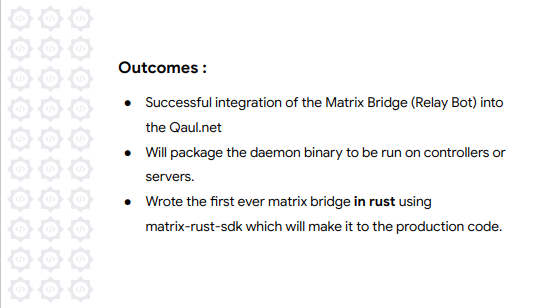

Preface
Writing a Matrix Bridge in Rust is a Google Summer of Code Project for the year 2023 under Freifunk Organization done by Harshil Jani and mentored by Mathias Jud for creating the Qaul<->Matrix Bridge which you can find out in detail in upcoming chapters. Google summer of code is an annual open source coding program and I am obliged to get selected for this, twice in consecutive years. But throughout reading the entire book, Please keep in mind about the fact that Open Source and Computer Science is the real big picture. All the things of which you would be thinking would matter are just a part of small pool. This does not make anyone more or less previlaged than other who was not into such places.
Last Year, I have crafted a journey book which reflected my work, project and daily deeds and efforts with it. It worked as a diary where I just flushed out my feelings. I never thought to craft any of my documentation work in public interest and this at some times feels so wrong. So, After all the nitty gritty learnings, I can assure that
- I won't repeat some mistakes into this book.
- People will actually learn a concept or project irrespective of who I am.
- The sole purpose should be to embrace the technicality of the project and not myself.
- Making newbies into open source comfortable in believing that it is not that hard to learn tons of things at a time.
With such self observations, I am starting this officially dated on 14th May 2023.
Link to GSoC'22 Journey Book
Link to GSoC'23 Journey Book
Project
Just adding neat information for my this year's project
Program : Google Summer of Code 2023
Organization : Freifunk
Project Name : Qaul.net
Mentor : Mathias Jud
Tech Stack : Rust, Protobuf, Matrix APIs
About Author
Harshil Jani is an Engineering Student at National Institute of Technology, Surat (a.k.a SVNIT or NIT-Surat) where he is pursuing the Bachelors of Technology (B.Tech) in Electronics and Communications (ECE) as majors and Computer Science Engineering (CSE)as minors.
He is quite passionate about helping and volunteering in building great ecosystem of open source tools, softwares or even infrastructures. His, Exploration was so deep that starting from the very first year of his hands on developing digital products, He have luckily set upon the best opportunity coming at the best time.
A good combination of luck and rigorous hardwork with some insomniac nights, He has been able to pull of many open source fellowships cum internships. Talking more about this, He has done his projects in Google Summer of Code with Organization CERN-HSF in 2022 and with Freifunk in 2023. Parallely he was also involved with Code for GovTech 2022 under Sunbird-RC. Looking at his performance in respective programs, The organisers of C4GT'22 which was Samagra Developement offered him an internship which was Work From Campus Internship at SamagraX which is a tech consultancy firm of Indian State Governments. He got a project slot in Summer of Bitcoin under Rust Bitcoin
With such a good plethora of open source experience, He have decided to leave the intern offer which was offered by Texas Instrumentations for the job role of Software Archietecture Intern and working on MPU Sitara sending patches to Linux Kernel in order of conflict of timings. There are spreading rumours that he may think about doing any legacy corporate interns in his last semester of university degree which would be in Jan 2024 with still a condition of the projects being open sourced.
Looking ahead in his career, He aims to just keep doing the good work irrespective of any conflicts and stay peaceful in life and enjoying the work assigned or taken.
A huge thanks and shoutout to all of his mentors who have helped him reach this great heights. Here are name of few of them with whome he have ran places.
- Nimish Mishra (LLVM Patch)
- Guilherme Amadio (GSoC'22)
- Chakshu Gautam (C4GT+Samagra)
- Shruti Agarwal (C4GT+Samagra)
- Tushar Gupta (Samagra)
- Mathias Jud (GSoC'23)
- Sanket Kanjalkar (SoB'23)
Special Mentions (maybe we talked the least but I would always respect real chads)
- Flying Cakes (Introducing me into Linux and Rust Ecosystems)
- Wired Hikari (Spectating him for SoB and NixOS helped me a lot)
- Rahul Kulkarni (CTO Samagra for exposing me about how to think technically over any product and win in market)
- Nazmul Idris (Helped me a lot to contribute on
r3bl_rs_utilsand talking about rust tools and open source VCs) - Sunidhi Sachan (Moral support)
Introduction
Qaul.net is completely internet independent and Peer to Peer chat application where within a local network, Devices can be connected and the communication can take place. There are no chances of being wiretapped since, It does not work on the internet. Also if you get caught up in situations where the internet services are down deliberately or indeliberately then too you can become part of the network using Qaul. All you need is the working device and the application itself.
Use case
There are multiple examples of places where the governments cuts down the communication links over a particular region due to riots or suspicious activities or sometimes due to political playings. With Qaul the aim is to provide local links of communication so no one feels lefted behind. For Example, In India-Pakistan border, there is always tension of riots between the nations for accquiring regions of Kashmir. Due to this, The internet services are blocked and also the communication infrastructure is damaged at times. Here, With qaul the issue can be addressed and people can still utilize communication since it falls under very basic rights of human beings. Another use case arises in a huge crowd events. Recently, My university organized the Techo-Cultural Fest with over 7000+ student gathered in one ground. Due to this large number of people gathered at a single place, We were hardly able to use daily communication services like texting on whatsapp or calling. The base stations went crazy to handle such a huge number of traffic over a particular cell. So, What if we students used qaul to create a network of our devices. This could have helped us in texting and finding lost friends.
Enough of use cases, But you might wonder : How does it works ? Well it uses mix and match of various communication protocols and cryptographic encryptions using which the application is decentralized and internet independent.
Implementation
Each device is called node and it has a cryptographic id called qaul-id. Now for discovering the peer devices, It used mDNS (Multicast Domain Name System) using which you can get the IP addresses of the peer devices without reaching or using the root DNS server (like .com or .edu or .uk etc) and no data is transfered to anyone outside the local network. The messages stays end-to-end encrypted because of the cryptographic keys used to sign them while sending and are verified on the receiving end. For routing the messages the Distance Vector Routing protocol is used which is based on the Round trip time per connection request. So under the hoods, Every 5 secsonds each device sends ping to neighbour nodes to measure RTT and every 10 seconds each node sends the routing information to all neighbouring nodes. For routing you can use any route. It could be LAN or INTERNET or even BLE (in progress). The protocol will choose the best route and send the message over the network using that route. The device id remains throughout the time even when device is not connected to the network until the application is uninstalled. So, You can easily go offline and come back and get connected over the same local network.
Google Summer of Code 2023 Project
We are going to implement the Matrix Bridge for the Qaul.net this summer. So If you wonder, Why would we need that at first place ? We need it because it will help us to broadcast messages over many mediums of communication which are supported by Matrix. This would allow the messages to be shared from local network to other networks and store it based on user consent. Let’s say, My government forces to not to keep any such application like qaul but luckily they don’t spy on my slack and allows me to keep it. I can simply transfer my messags from qaul to slack using the matrix server. If you remember earlier I said, You can get connected to same local network using qaul-id which get’s lost if you uninstall application. So, If there is a bridge, You will receive the message now in any communication medium. You can communicate from Slack as well. Relay Bridge is the appropriate name for this. But only relay bridge won’t be effective solution because we are using cryptographic encryptions and decryptions for each node or device. So, How would I know your real identity ? There is another kind of bridge which is puppetting. So, You can puppet yourself as old qaul user on the Slack or Telegram instead of a ghost username and then there can be fledged two ways communication. So, In total we need Relay and Double Puppetting (both ended) bridges with Matrix. Further from Matrix other bridges with other applications are already implemented and won’t be an issue.
There is a recent news where Indian Government is banning 14 Messaging Applications. One among the list is Element which is a matrix client which I am using for all my matrix chats. The government don’t understand the difference of banning the decentralized application due to their misconceptions about the technology.
I wish, We can bring qaul to greater reaches and get it working. Even if the government bans qaul from playstore or any downloading mediums, It can still be sent from one device to another by using open networks or application file transfer. But government can never block it from its functioning since it is completely internet independent. It just spreads like a virus and can be used wherever needed.
I would like to thank mentor Mathias Jud for helping very much in explaning and getting the concepts clear about the internal working of the applications, reviewing the proposal and helping in getting the IPv6 addresses to be launced in one of the new beta versions. Looking very much forward to work on this project with lots of enthusiasm and knowledge.
Community Bonding Period
Comunity Bonding period is dedicated for better understanding of the community, project and mentor-mentee connection. And we did all of that very well.
Finalizing on RustLang over GoLang
Initially we thought that we would run matrix bridge as a daemon process and use Golang to create the bridge. But, My mentor whom from now onwards I will be calling as MathJud has a friend working in element, which is a matrix client. He suggested us that since the world is taking on for the Rust, Matrix-SDK are actively written in Rust and there is something called as RuMa which stands for Rust Matrix. RuMa is an amazing work and thus, We have decided to do it in rust only because our Qaul has its entire backend in Rust.
RuMa : ruma.io
BattleMesh Conference Insights
MathJud was attending a conference in Spain which was Wireless Battlemesh. There he gave a talk on qaul and its feature and future. In between the conference, I was expecting to do a meeting but since he was bit occupied over there we rescheduled it. I saw the recording later and found a good archietectural picture of the qaul's tech stack with libqaul running in backend and Flutter used for GUI. I was not present over there physically but it looked really good.
Conference Information : Battlemesh V15
Writing first blog post in freifunk community
All of the GSoC students were given access for the freifunk wordpress and were expected to publish 3 blogs minimum each with their respective deadline. I wrote my very first blog post giving a general overview of my work.
Freifunk Blog : Qaul Matrix Bridge GSoC 2023
While MathJud was busy with conference, I wrote this blog and sent him for review. After getting it reviewed, I had published this blog.
Trying Discord<->Matrix Bridge
The law of universe is that you need to try something out before you dive into it. Before we do imagination in clouds for the project, I thought about trying one of the existing bridge. I tried with a Typescript written discord bridge to understand the workflow. There should be a bot which you need to invite to both the ends and then rest it can take forward. Using this as an example, we created a concept for how we would approach to deal with our bridge bot.
Discord Matrix Bridge : t2bot
Coding
I am aware that we are still in community bonding phase, but in software world deadlines and unknown problems are hard to face. So, Any great and good programmer would always advice to start early on coding. And so did my mentor MathJud. We started implementing the solution code wise once we had a plan ready about how to implement things as expected.
I will talk about coding in the upcoming chapters and in this book each chapter will represent a block of milestone achieved in our project. So separating it out into different chapters will be the best.
Linking Pull Request Raised : Adding a relay bot for matrix bridge
Creating Concept for Project
Proposals are means where we create a technical concept discussing mostly on one approach and an overview of how would we complete the project. But once you are the choosen one then there is a famous saying
" With great Powers comes great responsibility "
Now, It is time to re-evaluate all possible alternatives which are available and tools or framework which are most compatible with existing project in a way that you do not tweak it upto the extent that it looks boring to maintainers for reviewing.
I had my meeting with MathJud and he gave some really interesting points on the project to get started and some things which I have figured out, both together helped us in making a good plan.
I had read and researched through the RuMa and Matrix-SDK-Rust projects since this is now the part which we will be using for our project instead of GoLang.
Mathjud suggested that I should duplicate the qaul-cli binary and tweak it in whatever way I would need to in order to work on it. Here is the main reason why we chose the qaul-cli specifically for implementing the bridge concept.
- It already has two workers set in place which will check for any activity on entire qaul network each 10ms.
- We have access to CLI which we use to interact with RPC protocol and protobuff messaging.
I was reading through the documentation of the matrix-sdk crate and what I found was a beautifully commented codes for creating the bot inside examples/ directory. It has been few months, I am looking at some rust projects and this is something really important which I found over here. Learning point is that many rust crates are set of APIs. There is an directory called /examples as the name suggests it consists of examples about how to use those APIs. From now-onwards, I will always open up this directory if I am using any external crate to get my things done. I used one of the example and set-up locally another matrix account and run that example and it worked really smooth.
Plan for the bridge
Now, I know about the matrix-sdk and its usage into the project and also tried using the discord bot, I have moved towards creating a better and concrete plan of what I am supposed to do. Here is an excerpt from my notes.
Version 0
[On Matrix]
- Create a bot account for Qaul and specify a server to work on. homeserver : https://matrix.org username : qaul-bridge-bot password : #8u0r8f34842
- Invite the bot to the testing matrix room.
[On Qaul]
- Create a binary copy of qaul-cli
- Code the logic to login our bot into the matrix room as soon as the qaul-cli binary is running.
- Also Code a basic testing functionality (For Eg : Call it !ping command)
[On Matrix]
- Login with our personal account [@harshil1] and send a message with !ping in the room.
- In response we should receive all the nodes connected to the network.
Version 1
Instead of just an echo as response, We should pick the messages from both the ends. Send "Hi" from qaul and it should first sense in matrix without our personal human activity that there is some event triggered in qaul. Once event is detected, the message should show up into the matrix room.
Next we can reverse engineer the above feature and do the same in qaul by sending a message in matrix room.
Version 2
This just follows the Version 1 functionality wise but this should be implemented for 1-on-1 direct messages. In matrix and qaul both, private DMs are nothing but a group with only two members. We need to create a use case where we can send the message in groups by inviting a bot and the bot invite the user on other application and rest remains same.
Version 2+
After the above completions, We can think of double puppeting the bot so now our bot is not just qaul-bridge but a real username from the qaul node.
Finally, We settled on the above given plan and meanwhile, I have had started with the implementation based on that plan.
Coding Version 0 and Challenges Faced
Kickstarting coding
The very first step in developing the Matrix bridge for qaul was to attempt and create a login functionality into the matrix from the qaul code. As mentioned earlier, By reffering the examples/ in matrix-sdk which was latest at 0.6.2 by the time I am writing this, I wrote a new file inside qaul-matrix-bridge binary called relay_bot.rs along with a connect() method which will allow us to connect with matrix.
Dependencies conflicts
With the new connect() method and the relay_bot.rs code, compiler complaint heavily with list of errors. On debugging, The errors were about dependency version conflict.
With latest matrix-sdk 0.6.2, Version mismatched for libp2p which at the time has latest 0.51.x and qaul was using 0.50.0 and 0.52.0 was about to release officially within next upcoming month. The code was compiling if we downgrade matrix-sdk to 0.4.0. But then we lose some methods which connects qaul directly with some abstraction level to matrix.
I reported this to MathJud. He took some time to look at the dependency tree and figured out the exact conflicts. We were using libp2p at 0.50.x and it had libp2p-swarm-derive. Now the matrix-sdk and libp2p-swarm-derive has two packages in common
- quote
- syn
And the syn package had a big version number change 1->2.
But If libp2p 0.52.0 gets released, It would have solved the conflict but it would require us to do some code changes to upgrade qaul to onboard 0.52.0 of libp2p. So, For inital rounds of test, We decided to stick with an older version of matrix-sdk with no change inside qaul.
I have although asked the maintainers of libp2p about when they'd plan their next release in one of their open issues : Link to discussion on lib p2p 0.52.0 release
Sailing the Boat
I have now started coding with matrix-sdk 0.4.0 and implemented the very first feature which listens on the room for any messages on matrix and return us back with a simple message.
The relay_bot::connect() method were rightly used for login into matrix and listening on the matrix client for any activity or interact with it. Since this process required synchronus listening on the matrix service, It actually blocked the qaul-cli. We needed to run both the process simultaneously and synchronously.
- Keep checking for messages on matrix
- Keep checking for messages in qaul
To make both the calls on both side sync, We thought to run the process of matrix login and configuration inside a different thread. This way, the process kept running in new thread without blocking our qaul-cli. Another option was that we may have polled the matrix part inside the loop which runs in qaul for every 10 miliseconds for checking any command line events or RPC events. But, It comes with a problem of overhead since, relay_bot::connect() logs in every time we run in a loop and tweaking it was not likely the best option. Running in separate thread was the best thing which we got to see clearly.
#![allow(unused)] fn main() { thread::spawn(|| { // connect the matrix bot with the qaul-cli match relay_bot::connect() { Ok(_) => { println!("Matrix-Bridge connecting"); } Err(error) => { println!("{}", error); } } }); }
Next I have worked on developing the !qaul command and !users-list command which will listen to messages from matrix and respond from qaul with appropriate message.
Now that we know the using a !qaul command we are able to trigger a message from qaul broadcast, This ensures the in qaul we are able to listen successfully for all the messages comming from matrix room.
This is actually a simple implementation given by matrix-sdk itself. Here is the snippet below.
We first login to our bot client using the configuration which we have had in our matrix running thread. Then on that configuration, We listen for any incomming messages every few miliseconds (200ms for testing but should be less when it gets in real implementation).
#![allow(unused)] fn main() { let client = Client::new_with_config(homeserver_url, client_config).unwrap(); client .login(&username, &password, None, Some("command bot")) .await?; println!("logged in as {}", username); // An initial sync to set up state and so our bot doesn't respond to old // messages. client.sync_once(SyncSettings::default()).await.unwrap(); // Listening for all the incomming messages on bot account. client.register_event_handler(on_room_message).await; }
and the magical implementation if any message is received is done in this function on_room_message.
#![allow(unused)] fn main() { async fn on_room_message(event: SyncMessageEvent<MessageEventContent>, room: Room) { // If the room that receives the message is joined by the bot account. if let Room::Joined(room) = room { // Extract out the message content and name of sender. let (msg_body, msg_sender) = if let SyncMessageEvent { content: MessageEventContent { msgtype: MessageType::Text(TextMessageEventContent { body: msg_body, .. }), .. }, sender: msg_sender, .. } = event { (msg_body, msg_sender) } else { return; }; // If bot is replying then the same message in matrix room is considered as received and we // get double copy of the sent message in qaul. So we don't listen for the messages where // sender is qaul-bot. if msg_sender != "@qaul-bot:matrix.org" { let msg_text = format!("{} : {}", msg_sender, msg_body); // on receiving !qaul in matrix, Send message if msg_body.contains("!qaul") { let content = AnyMessageEventContent::RoomMessage(MessageEventContent::text_plain( "I am a message sent from qaul network\n", )); room.send(content, None).await.unwrap(); } // on receiving !users-list in matrix, Send it to command line if msg_body.contains("!users-list") { let input_line = "users list".to_string(); let evt = Some(EventType::Cli(input_line)); if let Some(event) = evt { match event { EventType::Cli(line) => { Cli::process_command(line); } } } } } else { println!("Sent the message in the matrix room by !qaul-bot"); } } } }
Concrete usability plan
Usability Plan
By the time, I reported back to mentor MathJud about my integration of matrix with qaul with a simple command !qaul from matrix and It would return a string saying "I am a message from qaul", We got on another call to discuss more concrete planning for the usability.
He gave some suggestions :
Relay Bot
The bot receives the invite into a qaul-room. The bot accepts the invite and opens a public room with the same name in matrix.
Public Messaging
- Forward Public Messages from qaul to specific matrix-room.
- Forward Public Messages from Matrix to qaul public messages.
Group Chats
The bot will forward messages from the qaul chat room to matrix chat room and vica versa.
Puppeting
The puppeting shall create a 1-to-1 communication relation between qaul and matrix. In order to make that happen, The matrix bridge needs to have administrative rights on the matrix server in order to create a matrix user for every qaul user writing a message. The bridge also needs qaul users for matrix users that shall be able to communicate over it. The creation of qaul users should be handled restrictive, as they would be announced in the qaul network and create overhead in the routing table.
Concerns
- Can our Matrix room use same UUID which we use for qaul rooms ?
- As there is no concept of open chat room in qaul and all users needs to be invited by the group admin, Whether it makes sense to let the chat-bot open a qaul room as the bot would need to manually invite qaul users in it ?
- Should we have Auto-Joining for joining any Matrix room willing to do so ? If yes, We may need our own Matrix Homeserver so that we only have trusted people onto the network. [Currently I own the qaul-bot account on my university ID and manually create rooms and accept invites from my another account] If we don't own any homeserver then AutoJoin would not be a good way to do this since the primary concern of qaul may be at risk.
- Puppeting is a next big story and we would address it later in the journey.
Version-1 : The real bridge
Receiving message from Matrix in Qaul
In the Version-0 we have already a functionality where we were able to listen into the incoming Matrix messages and for this version, We are not just replying back to matrix but instead storing the message from matrix inside of our local peer network.
To do this, We were listening to matrix messages in qaul using on_room_message function as seen in Version 0. Now we are extending it with another function send_qaul which collects the message content and message sender and sends the information in the qaul where we send it ahead inside of the broadcast feed.
#![allow(unused)] fn main() { async fn on_room_message(event: SyncMessageEvent<MessageEventContent>, room: Room) { ... let msg_text = format!("{} : {}", msg_sender, msg_body); send_qaul(msg_text, room.room_id()); } }
#![allow(unused)] fn main() { fn send_qaul(msg_text: String, room_id: &RoomId) { // Protobuff for feed messages let proto_message = proto::Feed { message: Some(proto::feed::Message::Send(proto::SendMessage { content: msg_text, })), }; // Encode message let mut buf = Vec::with_capacity(proto_message.encoded_len()); proto_message .encode(&mut buf) .expect("Vec<u8> provides capacity as needed"); // Send the message in qaul feed Rpc::send_message(buf, super::rpc::proto::Modules::Feed.into(), "".to_string()); } }
This registers all the message in our feed. Now this closes our part of communication from a Matrix Room into the Qaul feed.
Sending from Qaul to Matrix
This was interesting part since we had to change design pattern multiple times in order to keep things simple and less fancy. The very first attempt was to send the message inside of the matrix room when someone sends the feed message from the CLI.
In qaul you can send the RPC feed message from CLI via feed send {msg} and so what I did is that where the RPC was listening for the qaul feed message I have implemented a function which would send the message in matrix.
#![allow(unused)] fn main() { fn matrix_send(message: String) { // Get the Room based on RoomID from the client information let matrix_client = MATRIX_CLIENT.get(); let room_id = RoomId::try_from("!nGnOGFPgRafNcUAJJA:matrix.org").unwrap(); let room = matrix_client.get_room(&room_id).unwrap(); // Check if the room is already joined or not if let Room::Joined(room) = room { // Build the message content to send to matrix let content = AnyMessageEventContent::RoomMessage(MessageEventContent::text_plain( message, )); let rt = Runtime::new().unwrap(); rt.block_on(async { // Sends messages into the matrix room room.send(content, None).await.unwrap(); }); } } }
And we send the message for each incoming feed message which is decoded in RPC as below.
#![allow(unused)] fn main() { /// Decodes received protobuf encoded binary RPC message /// of the feed module. pub fn rpc(data: Vec<u8>) { match proto::Feed::decode(&data[..]) { Ok(feed) => { match feed.message { Some(proto::feed::Message::Received(proto_feedlist)) => { // print all messages in the feed list for message in proto_feedlist.feed_message { ... // Send message to matrix Self::matrix_send(message.content); } } } _ => { log::error!("unprocessable RPC feed message"); }, } }, Err(error) => { log::error!("{:?}", error); }, } }
The most challanging part for this to happen is with the matrix configuration object state which we need in matrix_send because you need to information about the account which would send the message and if it is joined in the room or not ? We had real troubles working with the client to be shared from relay_bot into our feed since If we decide to change the RPC structure to take configuration as object then it may need a major version tweak and would break other binaries which don't take this third argument. We were more concerned about not changing the libqaul and avoid it as far as we can.
The best solution to this was suggested very correctly by MathJud and this really helped me solve this chicken and Egg problem. The solution was about using a global storage object stack. So we store the configuration from Matrix Client inside of a storage
#![allow(unused)] fn main() { // Setup a storage object for the Client to make it available globally pub static MATRIX_CLIENT: state::Storage<Client> = state::Storage::new(); async fn login( homeserver_url: &str, username: &str, password: &str, ) -> Result<(), matrix_sdk::Error> { ... MATRIX_CLIENT.set(client.clone()); } }
and now we are able to access this.
Serious design issue
Remember, Earlier I said we were trying to send message to matrix only when we write a command feed send {msg}. But what if the user on our peer network sends this message and is not from the bot account ? This was a serious compatibility issue about which I was unaware. My mentor actually figured this out and then we came to discussion that for this to happen, We may need to constantly listen for all incoming qaul message and send as soon as we receive a message instead of when we send it from CLI. Luckily, Receiving of message also takes place via RPC. And so the code was at right place but only thing was to listen for the message.
To this front, I have created a ticker which constantly looks every 2 seconds if there is any incoming message from qaul or not ? If there is a message then we can send it to qaul. But it had a new problem. Now, It sends all the messages from qaul because whenever we restart the client, the last_index goes back to 0.
The solution to this problem was a configuration file. Next I went to design a configuration file which takes certain things as input and keep track of last message. In next chapter I will go about how I made a configuration file to work with qaul.
Another challenging part was that if you look in matrix_send The sending of message to matrix is an asyncronous callback and thus we would need to await it. Again In order to await, We need matrix_rpc function as async. Which would further require the top level RPC function to be async and this would again break the libqaul for other binaries. So, MathJud again helped me with the issue and gave me a link to very good blog post and I read it and integrated the tokio runtime block async in the function. I would also say that we tried async block but since matrix is a tokio async so standard async block was not enough.
Link to async blog : Async and Sync in Rust
Version-1 : Configuring bridge
Structure of Config File
relay_bot:
homeserver: https://matrix.org
bot_id: qaul-bot
bot_password: not-gonna-tell
feed:
last_index: 25
Here the most important part is with the last_index. It helps in two ways. One is while we run our ticker which looks for new messages then on restarting it is not 0. So, We actually only send newer messages. Another benefit is that we can avoid the duplication of the matrix message. Since the incoming message from matrix is stored inside the qaul feed we increase the index so that message is not sent back into our feed.
Again use follow the same approach to store the configuration inside of a Storage object and then use it globally across the binary.
#![allow(unused)] fn main() { pub static MATRIX_CONFIG: state::Storage<RwLock<MatrixConfiguration>> = state::Storage::new(); pub async fn connect() -> Result<(), matrix_sdk::Error> { println!("Connecting to Matrix Bot"); // Configuration for starting of the bot let path_string = Storage::get_path(); let path = Path::new(path_string.as_str()); let config_path = path.join("matrix.yaml"); let config: MatrixConfiguration = match Config::builder() .add_source(File::with_name(&config_path.to_str().unwrap())) .build() { Err(_) => { log::error!("no configuration file found, creating one."); MatrixConfiguration::default() } Ok(c) => c.try_deserialize::<MatrixConfiguration>().unwrap(), }; MATRIX_CONFIG.set(RwLock::new(config.clone())); login( &config.relay_bot.homeserver, &config.relay_bot.bot_id, &config.relay_bot.bot_password, ) .await?; Ok(()) } }
and we can now use this matrix configuration to take care of last_index and feed messages
#request_feed_list Implementation
#![allow(unused)] fn main() { let mut config = MATRIX_CONFIG.get().write().unwrap(); let last_index_matrix = config.feed.last_index; // print all messages in the feed list. for message in proto_feedlist.feed_message { print!{"[{}] ", message.index}; // This is what we are getting from ticker logic as can be seen below println!("Time Sent - {}", message.time_sent); println!("Timestamp Sent - {}", message.timestamp_sent); println!("Time Received - {}", message.time_received); println!("Timestamp Received - {}", message.timestamp_received); println!("Message ID {}", message.message_id_base58); println!("From {}", message.sender_id_base58); println!("\t{}", message.content); println!(""); // Only send if the message index is greater than last known index. if message.index> last_index_matrix { Self::matrix_send(message.content); config.feed.last_index = message.index; // save the configuration file locally. MatrixConfiguration::save(config.clone()); } } // set the configuration back to object. MATRIX_CONFIG.set(config.clone().into()); }
Ticker logic
#![allow(unused)] fn main() { let mut feed_ticker = Ticker::new(Duration::from_secs(2)); loop { let evt = { let feed_fut = feed_ticker.next().fuse(); pin_mut!(feed_fut); select! { _feed_ticker = feed_fut => { let config = MATRIX_CONFIG.get().read().unwrap(); let last_index = &config.feed.last_index; // Check unread messages from Libqaul feed::Feed::request_feed_list(*last_index); None } } }; } }
The function request_feed_list allows us to know send messages to matrix and print in qaul. This is the logic which you can see in the above snippet.
By this time, We were able to close our communication completely and reliabaly from
- Matrix Room to Qaul Feed
- Qaul Feed to Matrix Room
Version-2 : Group/Room Creation
There are two aspects which we want to listen in qaul and act accordingly on matrix.
- Listening for creation of new peer groups.
- Listening for messages in peer network connected to bot account.
Group Creation
The use-case for this part was that we would create a new group with the name of matrix user and the bot should have powers to open up the new matrix room with the name of qaul users.
I have created a group ticker in order to do this just like feed ticker and extended our configuration for a mapping between
Qaul group ID
- Matrix-Room-Id
- Last index for a given group
- Qaul group name/Matrix User name
Now, We listen for each new group. If any new group is created and detected by group ticker, We open a matrix room with the name of qaul group admin and then invite the matrix user with whome the qaul user wanted to chat.
#![allow(unused)] fn main() { let mut group_ticker = Ticker::new(Duration::from_secs(2)); loop { let evt = { let group_fut = group_ticker.next().fuse(); pin_mut!(group_fut); select! { _group_ticker = group_fut => { // Checks every two seconds if any new group is created or not group::Group::group_list(); None } } }; } }
#![allow(unused)] fn main() { let mut config = MATRIX_CONFIG.get().write().unwrap(); for group in all_groups { let group_id = uuid::Uuid::from_bytes(group.group_id.try_into().unwrap()); let mut qaul_room_admin = format!("@qaul://{}",""); for member in group.members { // Member who is admin if member.role == 255 { let user_id = PeerId::from_bytes(&member.user_id).unwrap(); qaul_room_admin.push_str(&user_id.to_string()); } } // If the group is not stored in the configuration then create matrix room. if !config.room_map.contains_key(&group_id) { let matrix_client = MATRIX_CLIENT.get(); let rt = Runtime::new().unwrap(); rt.block_on(async { // Creating new room let mut request = CreateRoomRequest::new(); let room_name = RoomNameBox::try_from(qaul_room_admin).unwrap(); request.name = Some(&room_name); let room_id = matrix_client .create_room(request) .await .expect("Room creation failed"); // Invite matrix user matrix_client.get_joined_room(&room_id).unwrap().invite_user_by_id(&UserId::try_from(group.group_name.clone()).unwrap()).await.unwrap(); // Send the (matrix roomID, qaul group name, last_index) into the below HashMap let room_info = MatrixRoom { matrix_room_id: room_id, qaul_group_name: group.group_name, last_index: 0, }; config.room_map.insert(group_id, room_info); MatrixConfiguration::save(config.clone()); }); } } }
We have also extended our matrix incomming message function on_room_message for listening to the incoming message from a given matrix room and then we check which room has sent the message from the Map and in qaul we store message in respective group only. So no one can intrude to know that the message was apart from the group admin. If the message is received from a room which is not inside our map then we send it to our feed since without mapping no matrix room should fundamentally exist and it is meant as a broadcast message.
#![allow(unused)] fn main() { fn send_qaul(msg_text: String, room_id: &RoomId) { let mut config = MATRIX_CONFIG.get().write().unwrap(); let qaul_id = find_key_for_value(config.room_map.clone(), room_id.clone()); if qaul_id.is_some() { // send message to qaul group // create group send message // logic here } else { // send to feed from matrix // logic here } MatrixConfiguration::save(config.clone()); // save config back since in logic we might already update last index for group/feed. } }
With this we have completed another functionality where we are able to
- Create private DMs between a qaul user and matrix user.
- Matrix user sending message to qaul user.
Version-2 : Send DM from qaul to matrix
The very first part of this work was to figure out how we can create a new matrix room based on willingness of a Qaul user. We get RPC event for invited groups in Qaul. The steps are simple
- Qaul user creates a new group with the matrix ID of matrix user.
- Invites the Qaul Bridge user into the group.
- Bridge user accepts the invitation automatically and joins the group.
- Bridge user triggers the room creation on matrix and invites the matrix user.
This is very simple auto-joining and invitation part in Qaul which can be explained as below.
#![allow(unused)] fn main() { _invited_ticker = invited_fut => { group::Group::group_invited(); None } }
This ticker keeps running after few miliseconds and we keep listening to new group invitation on the bridge user.
Once the invitation is received we invite matrix user into the group by creating a new room. But we always check that the user is an admin of the qaul group who is trying to create a new room. We actually also have a similar check on Matrix side too where we check the person inviting is admin or not. If admin then only we proceed further.
#![allow(unused)] fn main() { let all_groups = group_list_response.groups.clone(); let mut config = MATRIX_CONFIG.get().write().unwrap(); for group in all_groups { // If Mapping exist let it be. Else create new room. let group_id = uuid::Uuid::from_bytes(group.group_id.try_into().unwrap()); // qaul_groups.insert(group_id, group.group_name.clone()); let mut qaul_room_admin = format!("@qaul://{}", "[username]"); for member in group.members { if member.role == 255 { let user_id = PeerId::from_bytes(&member.user_id).unwrap(); qaul_room_admin.push_str(&user_id.to_string()); } // If group mapping does not exist // If group_name contains matrix user name then only do this. if let Ok(user) = UserId::try_from(group.group_name.clone()) { if !config.room_map.contains_key(&group_id) { let matrix_client = MATRIX_CLIENT.get(); let rt = Runtime::new().unwrap(); rt.block_on(async { println!("{:#?}", group_id); // Check if user exist on matrix // Create a group on matrix with qaul user name. let mut request = CreateRoomRequest::new(); let room_name = RoomNameBox::try_from(qaul_room_admin).unwrap(); request.name = Some(&room_name); let room_id = matrix_client .create_room(request) .await .expect("Room creation failed") .room_id; // Check if the room is joined if let Some(joined_room) = matrix_client.get_joined_room(&room_id) { joined_room.invite_user_by_id(&user).await.unwrap(); } else { println!("Wait till the bot joins the room"); } // Save things to Config file let room_info = MatrixRoom { matrix_room_id: room_id, qaul_group_name: group.group_name, last_index: 0, }; config.room_map.insert(group_id, room_info); MatrixConfiguration::save(config.clone()); }); } } } } }
The second part of this Direct communication messages was to allow the messages sent from the qaul private DM into the matrix world.
Luckily, In qaul we already had a mechanism to detect the message in a qaul group over the network. Each message would contain its own meta-data like the group-id, sender-id and the message content. We can map with the group-id to check in which group it is contained in and from our matrix configuration we can figure the matrix room which contains the mapping and send the message over the network.
The qaul way of detecting the message is that for every few milliseconds we constantly poll over the message which we receive on our network
#![allow(unused)] fn main() { if let Ok(config) = MATRIX_CONFIG.get().read() { group::Group::group_list(); let qaul_groups: Vec<Uuid> = config.room_map.keys().cloned().collect(); // Check unread messages from Libqaul groups for group in qaul_groups { let matrix_room = config.room_map.get(&group).unwrap(); let last_index_grp = matrix_room.last_index; let group_id = group.as_bytes().to_vec(); chat::Chat::request_chat_conversation(group_id,last_index_grp); } } else { println!("Waiting for the configuration to Sync") } None }
Here the function method request_chat_conversation() is responsible for giving us the list of unread messages in a given group for all the groups in network.
From the RPC event of all the unread messages which we receive, We extract the details for formatting our matrix message and prepare it to send it on the matrix bridge.
Details like Qaul User Name, Mapped Room ID and Message Content are used to be sent over the network using matrix_send() method which I will elaborate below after the following snippet.
#![allow(unused)] fn main() { Some(proto::chat::Message::ConversationList(proto_conversation)) => { // Conversation table let group_id = uuid::Uuid::from_bytes(proto_conversation.group_id.try_into().unwrap()); let mut config = MATRIX_CONFIG.get().write().unwrap(); if !config.room_map.contains_key(&group_id) { println!("No Mapping found"); } else { let matrix_room = config.room_map.get_mut(&group_id).unwrap(); let last_index_grp = matrix_room.last_index; let room_id = matrix_room.clone().matrix_room_id; for message in proto_conversation.message_list { if message.index > last_index_grp { if let Ok(ss) = Self::analyze_content(&message, &room_id) { print! {"{} | ", message.index}; // message.sender_id is same as user.id match proto::MessageStatus::from_i32(message.status) .unwrap() { proto::MessageStatus::Sending => print!(".. | "), proto::MessageStatus::Sent => print!("✓. | "), proto::MessageStatus::Confirmed => print!("✓✓ | "), proto::MessageStatus::ConfirmedByAll => print!("✓✓✓| "), proto::MessageStatus::Receiving => print!("🚚 | "), proto::MessageStatus::Received => print!("📨 | "), } print!("{} | ", message.sent_at); let users = QAUL_USERS.get().read().unwrap(); println!("{:#?}", users); let sender_id = bs58::encode(message.sender_id).into_string(); println!("{}", sender_id); let user_name = Self::find_user_for_given_id(users.clone(), sender_id) .unwrap(); println!( " [{}] {}", bs58::encode(message.message_id).into_string(), message.received_at ); for s in ss { // This part is mapped with the matrix room. // Allow inviting the users or removing them. Self::matrix_send(&s, &room_id, user_name.clone()); println!("\t{}", s); } println!(""); matrix_room.update_last_index(message.index); } } } MatrixConfiguration::save(config.clone()); } } }
This is how we analyse an unread message in qaul group and then send to matrix bridge using matrix_send() method.
#![allow(unused)] fn main() { fn matrix_send(message: &String, room_id: &RoomId, user: String) { // Get the Room based on RoomID from the client information let matrix_client = MATRIX_CLIENT.get(); let room = matrix_client.get_room(&room_id).unwrap(); // Check if the room is already joined or not if let Room::Joined(room) = room { // Build the message content to send to matrix let final_msg = format!("{} : {}", user, message); let content = AnyMessageEventContent::RoomMessage(MessageEventContent::text_plain(final_msg)); let rt = Runtime::new().unwrap(); rt.block_on(async { // Sends messages into the matrix room room.send(content, None).await.unwrap(); }); } } }
With this chunk of code, We have successfully achieved the integration of private group messages from both ends Qaul->Matrix and Matrix->Qaul.
Version-2 : Invite and remove from group
We have thought of invitation and removal of the qaul users from the matrix chat. Now since the matrix room was open for participation by multiple members we were more inclined to set restrictions on who can !invite or !remove the members from the matrix chat.
Architecturally, We implemented that the users who have Admin Powers in Matrix can only perform the invitation and removal commands. This would restrict the unmonitered chaos which would happen if we allow everyone to invite or remove.
In order to invite a member you can write the command in matrix room as
!invite {peer-id of qaul user}
The code from matrix side looks as below :
#![allow(unused)] fn main() { // on receiving !invite in matrix if msg_body.contains("!invite") { let matrix_user = room.get_member(&msg_sender).await.unwrap().unwrap(); // Check for Admin Powers if matrix_user.power_level() == 100 { let mut iter = msg_body.split_whitespace(); let _command = iter.next().unwrap(); let qaul_user_id = iter.next().unwrap().to_string(); let room_id_string = room.room_id().to_string(); let sender_string = msg_sender.to_string(); let request_id = format!( "invite#{}#{}#{}", room_id_string, sender_string, qaul_user_id ); log::info!("{}", request_id); // Create group only if the mapping between a qaul grp and matrix room doesn't exist. // If it exist then please check if user already exist or not. If not then invite let config = MATRIX_CONFIG.get().write().unwrap().clone(); let room_id = room.room_id(); let qaul_group_id: Option<Uuid> = find_key_for_value( config.room_map.clone(), room_id.clone(), ); if qaul_group_id == None { group::Group::create_group( format!("{}", msg_sender.to_owned()).to_owned(), request_id, ); // Acknowledge about sent invitation to qaul user. let content = AnyMessageEventContent::RoomMessage( MessageEventContent::text_plain("User has been invited. Please wait until user accepts the invitation."), ); room.send(content, None).await.unwrap(); } else { // Get the list of users who are members to the given room. group::Group::group_info( chat::Chat::uuid_string_to_bin( qaul_group_id.unwrap().to_string(), ) .unwrap(), request_id, ); log::info!("The Room Mapping already exist for this room"); // Else Invite the given user in same mapping of the matrix room. } } else { // Not Admin let content = AnyMessageEventContent::RoomMessage( MessageEventContent::text_plain( "Only Admins can perform this operation.", ), ); room.send(content, None).await.unwrap(); } } }
As of now, In qaul we do not have request numbering mechanism, so we don't know that which request was received first and others following. There may be chances that the sequence would be much different in case of traffic on matrix servers and qaul peer network. So we changed our libqaul code a bit to support the id based recognition since we were using RPC. In case of all the invite request the RPC request id is given as #invite#matrix_room_id#msg_sender_id#qaul_user_peer_id
This would then be decoded on the RPC Response.
#![allow(unused)] fn main() { // Receiving GroupInfoResponse which we are polling every 10 ms. Some(proto::group::Message::GroupInfoResponse(group_info_response)) => { let group_id = uuid::Uuid::from_bytes( group_info_response.group_id.try_into().unwrap(), ); if request_id != "" { // reqeust_id = qaul_user_id#room_id let mut iter = request_id.split('#'); let cmd = iter.next().unwrap(); log::info!("cmd : {}", cmd); let room_id = iter.next().unwrap(); log::info!("room : {}", room_id); let _sender = iter.next().unwrap(); log::info!("sender : {}", _sender); let qaul_user_id = iter.next().unwrap(); log::info!("qaul user : {}", qaul_user_id); if cmd == "invite" { let grp_members = group_info_response.members.clone(); let user_id = chat::Chat::id_string_to_bin(qaul_user_id.to_owned()).unwrap(); let mut all_members = Vec::new(); for member in grp_members { all_members.push(member.user_id); } if all_members.contains(&user_id) { matrix_rpc( "User already exist in the qaul group".to_owned(), RoomId::try_from(room_id).unwrap(), ); } else { // Invite user into this group. let users = QAUL_USERS.get().read().unwrap(); let user_name = chat::Chat::find_user_for_given_id( users.clone(), qaul_user_id.to_owned(), ) .unwrap(); matrix_rpc( format!("User {} has been invited. Please wait until user accepts the invitation.", user_name ).to_owned(), RoomId::try_from(room_id).unwrap()); matrix_rpc("User has been invited. Please wait until user accepts the invitation.".to_owned(), RoomId::try_from(room_id).unwrap()); Self::invite( chat::Chat::uuid_string_to_bin(group_id.to_string()) .unwrap(), user_id, ); } } } } }
Similarly we do have operations for removal. Do checkout our codebase to understand the implementations at their present state.
Version-2 : Sending files and receiving files
Another part of the major bridging features was a choice between puppeting and choosing to work for File exchanges. The file communication was more important since we already gave the users their name in the message as identifier. Puppetting was on the less priorty use case. So we decided to move ahead with the file messages.
From Matrix it was straightforward that you upload a file in room. It gets encoded into MxcURI (Matrix File Specific URL). From this, We got an helper function from SDK to download the file on the device which would Run the bridge (Assume RPi). Now, This would first download the file and send it further to target peer device (Your Phone).
Once it completely sends the file, We delete it from the bridge host (RPi). Well, There can be debate on why would we not just pass the MxcURI directly to target device and decode it on bridge (which is not secure way to do this). This when I have asked to my mentor, He says that Qaul Application has bunch of version keeping. If we change any single part of code in qaul then it possible means that the new users have to upgrade the application to use it. Since Qaul is application which goes in cases of internet shutdowns and not for regular use, This would not be a great way to introduce it. And the bridge would be part of a local network too. So, It does not harm the security.
#![allow(unused)] fn main() { MessageType::File(FileMessageEventContent { body: file_name,url: file_url, .. }) => { // We don't consider message in matrix from the bot // since it would be the response being sent from qaul. if msg_sender != bot_matrix_id { // generate the File Request Body let request = MediaRequest { format: MediaFormat::File, media_type: MediaType::Uri(file_url.as_ref().unwrap().clone()), }; // get the bytes data decrypted from the matrix into qaul let client = MATRIX_CLIENT.get(); let file_bytes = client.get_media_content(&request, true).await.unwrap(); // Save the file to local storage let path_string = Storage::get_path(); let path = Path::new(path_string.as_str()); let output_file_path = path.join(file_name); let mut file = std::fs::File::create(output_file_path).unwrap(); let _ = file.write_all(&file_bytes); log::info!("File Saved Successfully"); // Send the file to qaul world send_file_to_qaul( room.room_id(), file_name, format!("{} by {}", file_name, msg_sender), ); } } }
When we want to send the file from qaul to matrix we have many helper functions written in bridge which can help to analyze the chat contents and files and then keep track of their upload status. Based on it, It will help us to send file to matrix from qaul which is reverse communication of what you have seen above.
You can refer chat.rs and chatfile.rs for the exact codewise implementation of handling files in chat.
Here is code to review how we worked on the entire logic from bridge to matrix.
#![allow(unused)] fn main() { fn send_file_to_matrix(file_path: String, room_id: &RoomId, extension: String, file_name: String) { let path = std::env::current_dir().unwrap(); let mut storage_path = path.as_path().to_str().unwrap().to_string(); let user = BOT_USER_ACCOUNT_ID.get(); storage_path.push_str(&format!("/{}", user)); storage_path.push_str(&format!("/files/{}", file_path)); let matrix_client = MATRIX_CLIENT.get(); let room = matrix_client.get_room(&room_id).unwrap(); if let Room::Joined(room) = room { // Build the message content to send to matrix let rt = Runtime::new().unwrap(); rt.block_on(async { // Sends messages into the matrix room log::info!("{}", storage_path); let file_buff = PathBuf::from(storage_path.clone()); let mut buff = File::open(file_buff).unwrap(); let mut content_type: &Mime = &STAR_STAR; log::info!("{}", extension); match extension.as_str() { "jpg" | "png" | "jpeg" | "gif" | "bmp" | "svg" => content_type = &mime::IMAGE_STAR, "pdf" => content_type = &mime::APPLICATION_PDF, _ => { log::info!("Please raise a github ticket since we don't allow this file-type.") } } room.send_attachment(&file_name, content_type, &mut buff, None) .await .unwrap(); }); // Delete the file from bot server. log::info!("Deleting file from : {}", storage_path); fs::remove_file(storage_path).expect("could not remove file"); }; }
Version-2 : Polishing with user menu
Now we were all set functionality wise to launch the very first usable bot version on the qaul community. To improve it further for the users, I have worked a bit on improving the logs on the binary, write comments in code, format the response messages to be sent over the matrix.
One major thing which we did was to improve the matrix menu for the matrix users by allowing them to write the commands to trigger qaul events from matrix.
!qaul : Ping to check if the bot is active or not.
!help : Get the help menu in matrix for possible events.
!users : Get list of all the users on the network.
!invite {qaul_user_id} : To invite a user from the qaul into this matrix room.
!remove {qaul_user_id} : To remove a user from the qaul into this matrix room.
!group-info : Get details for the qaul group with which this matrix room is connected.
Here is the code explaining how we took the commands from matrix world and processed things in Qaul world.
#![allow(unused)] fn main() { // We don't consider message in matrix from the bot // since it would be the response being sent from qaul. if msg_sender != bot_matrix_id { let msg_text = format!("{} : {}", msg_sender, msg_body); // Send the text to qaul to process the incoming matrix message send_qaul(msg_text, room.room_id()); // on receiving !qaul from matrix, Send message if msg_body.contains("!qaul") { let content = AnyMessageEventContent::RoomMessage( MessageEventContent::text_plain( "I am a message sent from qaul network\n", ), ); room.send(content, None).await.unwrap(); } // on receiving !help from matrix, Give brief of all possible commands. if msg_body.contains("!help") { let content = AnyMessageEventContent::RoomMessage(MessageEventContent::text_plain( "!qaul : Ping to check if the bot is active or not.\n!users : Get list of all the users on the network.\n!invite {qaul_user_id} : To invite a user from the qaul into this matrix room.\n !remove {qaul_user_id} : To remove a user from the qaul into this matrix room.\n!group-info : Get details for the qaul group with which this matrix room is connected.", )); room.send(content, None).await.unwrap(); } // on receiving !invite in matrix if msg_body.contains("!invite") { let matrix_user = room.get_member(&msg_sender).await.unwrap().unwrap(); // Admin Powers if matrix_user.power_level() == 100 { let mut iter = msg_body.split_whitespace(); let _command = iter.next().unwrap(); // TODO : Try to return an error if userID is wrong. let qaul_user_id = iter.next().unwrap().to_string(); let room_id_string = room.room_id().to_string(); let sender_string = msg_sender.to_string(); let request_id = format!( "invite#{}#{}#{}", room_id_string, sender_string, qaul_user_id ); println!("{}", request_id); // Create group only if the mapping between a qaul grp and matrix room doesn't exist. // If it exist then please check if user already exist or not. If not then invite let config = MATRIX_CONFIG.get().write().unwrap().clone(); let room_id = room.room_id(); let qaul_group_id: Option<Uuid> = find_key_for_value( config.room_map.clone(), room_id.clone(), ); if qaul_group_id == None { group::Group::create_group( format!("{}", msg_sender.to_owned()).to_owned(), request_id, ); // Acknowledge about sent invitation to qaul user. let content = AnyMessageEventContent::RoomMessage( MessageEventContent::text_plain("User has been invited. Please wait until user accepts the invitation."), ); room.send(content, None).await.unwrap(); } else { // Get the list of users who are members to the given room. group::Group::group_info( chat::Chat::uuid_string_to_bin( qaul_group_id.unwrap().to_string(), ) .unwrap(), request_id, ); println!("The Room Mapping already exist for this room"); // Else Invite the given user in same mapping of the matrix room. } } else { // Not Admin let content = AnyMessageEventContent::RoomMessage( MessageEventContent::text_plain( "Only Admins can perform this operation.", ), ); room.send(content, None).await.unwrap(); } } // on receiving !users-list in matrix, Send it to command line if msg_body.contains("!users") { users::Users::request_user_list(room.room_id().to_string()); } // remove the people from the matrix room if msg_body.contains("!remove") { let matrix_user = room.get_member(&msg_sender).await.unwrap().unwrap(); // Admin Powers if matrix_user.power_level() == 100 { let mut iter = msg_body.split_whitespace(); let _command = iter.next().unwrap(); // TODO : Try to return an error if userID is wrong. let qaul_user_id = iter.next().unwrap().to_string(); let room_id_string = room.room_id().to_string(); let sender_string = msg_sender.to_string(); let request_id = format!( "remove#{}#{}#{}", room_id_string, sender_string, qaul_user_id ); println!("{}", request_id); let config = MATRIX_CONFIG.get().write().unwrap().clone(); let room_id = room.room_id(); let qaul_group_id: Option<Uuid> = find_key_for_value( config.room_map.clone(), room_id.clone(), ); if qaul_group_id == None { // No room mapping exist let content = AnyMessageEventContent::RoomMessage(MessageEventContent::text_plain( "No qaul group is mapped to this Matrix room. Please invite qaul users to this room.", )); room.send(content, None).await.unwrap(); } else { // Check for the group information to see if user is member of the Qaul Room or not group::Group::group_info( chat::Chat::uuid_string_to_bin( qaul_group_id.unwrap().to_string(), ) .unwrap(), request_id, ); } } else { // Not Admin let content = AnyMessageEventContent::RoomMessage( MessageEventContent::text_plain( "Only Admins can perform this operation.", ), ); room.send(content, None).await.unwrap(); } } // on receiving !group-info in matrix, You get the details of the group information. if msg_body.contains("!group-info") { let config = MATRIX_CONFIG.get().write().unwrap().clone(); let room_id = room.room_id(); let qaul_group_id: Option<Uuid> = find_key_for_value(config.room_map.clone(), room_id.clone()); if qaul_group_id == None { // No room mapping exist let content = AnyMessageEventContent::RoomMessage(MessageEventContent::text_plain( "No qaul group is mapped to this Matrix room. Please invite qaul users to this room.", )); room.send(content, None).await.unwrap(); } else { let request_id = format!("info#{}#_#_", room_id).to_string(); group::Group::group_info( chat::Chat::uuid_string_to_bin( qaul_group_id.unwrap().to_string(), ) .unwrap(), request_id, ); } } } else { println!("Sent the message in the matrix room by !qaul-bot"); } }
CHAOS Communication Camp
This is a camp for wireless mesh networks happening in Berlin. There was a Matrix Camp with few members from Element being the part of the camp. My mentor has a friend in Element who invited us to present our bridge.
My mentor was into the organizing team and had got no time to test the bridge. And I always tested it locally on my personal network. On the day of presentation, We were doing a live demo in front of people from Matrix on real community node which is a global node in Qaul and interconnects you with the entire qaul community.
As soon as my mentor created a new user into the community node, there was a crytography error in creating a user and the malicious peer ID was introduced into the network. By default CLI client ignores such uncertain peerID's but the code which I had written by that time was expecting correctness and was filled with unwrap()'s. As soon as bad ID entered into my bridge binary's database, All of my code just broke that too in a live presentation.
I took a moment and I was converting every unwrap() into match statement to just discard wrong things and not panic. But how long can you do that in a live presentation isn't it ? It was an embrassing feeling. I really thank my mentor who kept the viewers engaged into the conversation by asking matrix specific questions and explaining them out approach to create a bridge.
Then as a part of very quick solution, I have deleted the database and created a new binary user and re-run whole bridge and showed it in front of presenters all our basic working functionalities.
This presentation was a bit messy and embrassing since we have never tested on community node and were completely unaware about how a wrong peerID can create this huge of a problem for us.
In the end, The feedback which we received was kind enough and they said that the direction we have choosen is correct. We just need to fix the bugs which we just introduced for the very first time.
Google Summer of Code Lightening Talks
Starting from this year, Google has started an event where the Google Summer of Code contributors from various organisations would show up in an presentation and give a 3-min session about how beautiful their journey had been with the program.
I too applied for this Lightening Talk session to talk about my project and I was lucky enough to get selected as one of the 36 contributor out of 106 applications received for the talk. To be honest it was pure luck since they have mentioned that they have randomly selected the contributors.
On 19th Sept 2023, I have given my talk for 3 mins. You can find my slides below for my explaination about my work within 3 mins and my experience.
  
And I am too happy to appreciate Google Open Source organization to give me a gift for the lightening talk session. XD This year's contributors teased a lot to google about giving us swags or T-Shirt and they finally gave after the talk. There were options among many different items but I choosed an Insulated Travel Tumbler. Looking forward to have my hot/cold drinks into the tumbler.
Matrix Communication Summit 2023
The Matrix summit was an awesome outcome of our project showcase. There is a back story which I would like to share between me and my mentor. It was 48 hours before our presentation where we tested again for the second time on the community node. Somehow, We got lots of panicks which were due to cyclic initialization. The problem was that if we don't wait for certain miliseconds then there was a cyclic loop asking for initialization of Matrix from Qaul and Qaul from Matrix.
We both tried up straight for hours and finally, I implemented the temporary hack that we can wait for few seconds for the both parts to respond.
We did a lot of testing before the actual meeting and we faced latency issues. This was casued because while testing on community node, It finds device via mesh networks. So, Technically someone from Europe would need their device to get routed to mine and forward the connection to my mentor's device and thus the high latency. To resolve this huge latecy, We decided that we will be presenting them on our own local qaul network which would actually be the ideal case for average use.
Coming to the presentation part, It went very impressive. There were bunch of people from Element, RuMa, Matrix-SDK etc. in the Matrix Summit and they all were curious to learn first about qaul (given by my mentor) and then I explained them about the need of the bridge.
Then we had a smooth live demo. In the demo we did the most impressive thing. We opened a public chat room in matrix, Invited them all to join the room and interact with the bridge. They were happy to see it working. And finally, We got appraised for creating this beautiful project using their tools and SDKs.
Project Resources
Blog Posts
Pull Requests and Active Branch
- Bridge Branch for testing and further coding
Active - Build Pipelines for Bridge Binary
Active - Original PR-563
Stale - Rebased PR-563
Stale
Closing Notes
This marks the completion of my Google Summer of Code 2023 project. With all the project work and the conferences I have been part of, I am thankful to my mentor who have helped me in each stage to achieve better success.
As far as the project is concerned, We are still iterating on the parts where we lack the lower version of Matrix-rust-SDK which I have described in this chapter. Probably we would still plan a different architecture of bridge which would be more compatible when libqaul starts using libp2p 0.52.
I would urge developers to focus on FOSS principles and keep the source code as open as possible since the growth in computer science is research oriented and that's the main reason it has the term 'science' in it. Life is too short to earn money from code. Prefer farming, cooking, gardening, plumbing etc. to earn side money but for sake of FOSS please do not write proprietary codes.
Cheers and Regards